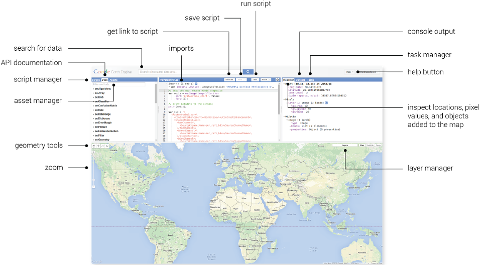

5 Google Earth Engine
5.1 Summary
This week, we focused on Google Earth Engine (GEE), a cloud-based platform that’s transforming how we perform geospatial analysis at planetary scale. As an urban sustainability practicioner, I was particularly excited about how GEE democratises access to Earth observation data, especially for studying cities and their environmental challenges. Rather than struggling with downloading massive datasets onto local computers, GEE allows us to retrieve and analyse entire regions directly in the cloud.
The lecture walked us through GEE’s capabilities for analysis—from understanding the basic JavaScript syntax, the difference between client and serve sidem the GEE UI and different useful functions and tools.

Besides the tools GEE offers a vast repository of over 40 years of satellite data, including various datasets from satellites like Landsat, MODIS, and Sentinel, enabling researchers to conduct large-scale analyses without needing extensive local computing resources Kumar & Mutanga (2018)
5.2 Applications
Google Earth Engine can help with urban climate analysis through processing of thermal data. Yang et al. (2024) developed a novel dynamic equal-area method using 1.6 million Landsat scenes in GEE, creating the first global urban heat island intensity dataset for 10,000+ cities. The analysis revealed that 83% of cities show significant nighttime UHI intensification (>0.08°C/decade), with arid cities exhibiting 2.3× faster warming than humid ones. Parallel work by Liu et al. (2020) harnessed GEE’s temporal stacking capability to process 3.2 million Landsat images, mapping global urban expansion at 30m resolution. Their finding that urban land grew 4× faster than urban population (1985-2015) exposes unsustainable sprawl patterns - data now underpinning UN-Habitat’s urban sustainability indicators.
GEE’s change detection algorithms enables also forest monitoring at scale. Barenblitt et al. (2021) implemented a hybrid machine learning approach in GEE, combining Random Forest classification with CCDC time-series analysis on Landsat data. This detected 700ha of illegal mining within Ghana’s protected areas - a finding that prompted government enforcement actions. Chen et al. (2021) advanced this by developing a spectral mixture analysis workflow in GEE that differentiates degradation (partial canopy loss) from deforestation. Their method achieved 91% accuracy in Georgia’s forests, revealing degradation impacts 28× more extensive than clear-cutting, critical for carbon stock assessments.
For agricultural monitoring, Phalke et al. (2020) leveraged GEE’s parallel processing to analyze 160TB of Landsat data across 64 countries. Their Random Forest model incorporated 26 spectral-temporal features, achieving 93.8% accuracy in cropland identification. The resulting map revealed 12% more cropland in Russia than FAO estimates - a discrepancy crucial for global food production forecasts. This continental-scale analysis would be computationally prohibitive without GEE’s distributed architecture.
5.3 Reflection
While I’ve used Google Earth Engine (GEE) before in various projects, this week served as a powerful reminder of the platform’s seemingly endless possibilities. It’s not just the vast data archive and processing power that continues to impress me; it’s the vibrant, ever-growing community of researchers and practitioners who are constantly sharing new datasets, tools, and insights. This collaborative spirit is truly what makes GEE so transformative for analysis.
What excites me most is how GEE could help bridge the gap between environmental science and urban policy-making. The ability to quickly analyse and visualise environmental patterns across entire cities makes it easier to communicate findings to decision-makers. I’m particularly interested in using these tools to support community-led environmental monitoring initiatives or citizen science projects.
Looking ahead, I’m eager to explore how GEE could support my dissertation on the intersection between urban morphology and urban heat. The platform’s ability to combine multiple data sources—from thermal imagery to vegetation indices—could help identify priority areas for interventions. I’m also intrigued by the possibility of developing custom applications GEE applications.